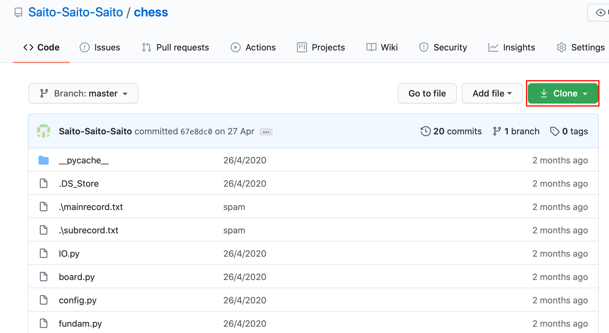
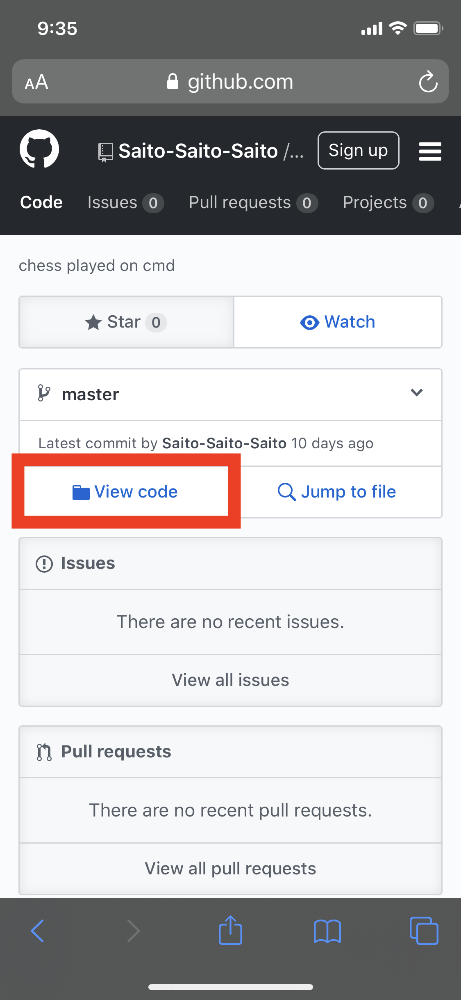
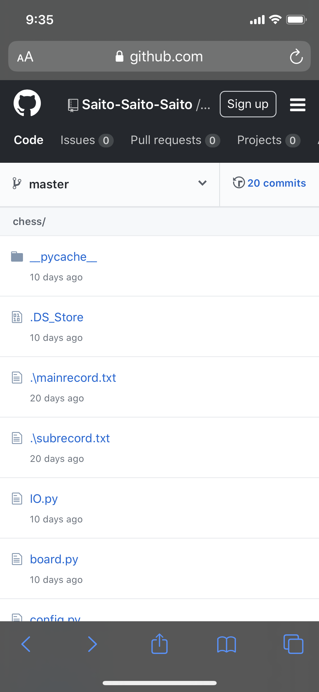
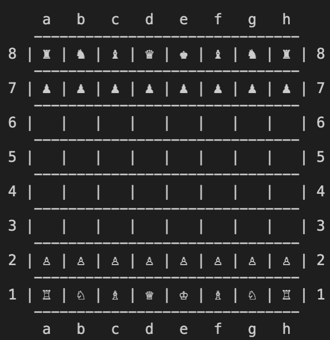
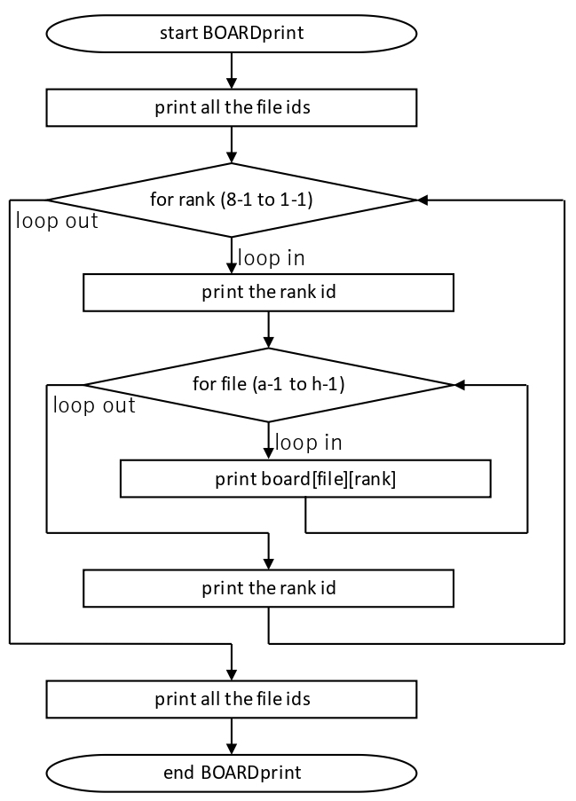

Stage 3 盤面をつくる
大枠は Stage 2 のところでお話しした通りです。 board という 2 次元配列に、プラスかマイナスで表されるプレーヤー情報と、1 から 8 で表される駒の種類の情報を突っ込んでいきます。board のインデックスは file と rank の値を 0 スタートで使います。それでは早速コーディングしていきましょうか。
目次
3-1 定数決め
私のコードにいくつかファイルがあるでしょう。え？お前のコードなんてもってないって？しょうがないなあ。パソコンの人はこのリンクにある緑のボタンで "Clone or download" って書いてるところクリックして、"Download ZIP" って押せばもらえるから、
この赤く囲ったところですよ。
スマホの場合はまずこの画面になりますから
枠で囲ったところをタップするとファイルが一覧で出てきます。
ファイルを選択してコードをご覧になれます。もし迷ったら「GitHub コード ダウンロード」とかでググればやり方出てきますよ。そこ、Yahoo はどうすればとか言わない。
で、特にその中でも config.py というところに注目してください。ろくにプログラムっぽいことが書いてなくて「ほとんど値入れてるだけじゃん」となると思います。いや、それでいいんですよ。configure って英単語は「～を設定する」って意味なんですから、全体に関わるような、大事な大事な変数と定数の設定を全部ここでやっちゃおうということなんです。
まずいちばん上の #! から始まるヤツは「シバン」と言います。どうやら OS によっては必要らしいです。これはよその説明の方が詳しいので、ぜひそちらを参照なさってください。下にいって logging とか書いてるのありますよね。これも是非調べてみるといいと思います。ログといって、一言でいうと、開発者だけが見える print といったところでしょうか。さらに下の records は Stage 7 で使います。だから早く教えろなんていってないで、ちょっと黙ってなさい。
説明には順番ってもんがあるんですよ、旦那。
もっと下ってって SIZE ってのがありますよね。これは盤面の大きさを表しています。つまり 「SIZE × SIZE のボードを使っていますよ」という意味。「別に 8 って書けばいいじゃねえか」と思うかもしれませんが、「この 8 って何だっけ？」とならないようにあえて名前を付けてあげているんです。 OVERSIZE は後々出てきますが、 SIZE から圧倒的にはみ出る数を使うことで、意図的にバグ... じゃねえや「場合分け」をしやすくしています。
FILE と RANK は board など座標を使ってあらわすもののインデックスに使います。今回は board に限らず、いろんなところで盤面の座標を扱う機会があります。そのインデックスにやはり名前を付けてあげることで、コードがわかりやすく、そして読みやすくなります。a から h は棋譜の書き方にのっとった file の番号です。
さらに下には駒の番号とプレーヤーの番号が続きます。駒はぶっちゃけ数字がバラバラであればいいのですが、唯一 EMPTY 「駒なし」だけは 0 にしておく必要があります。何も置いてないマスは白黒どちら側のものでもありませんからね。 WHITE と BLACK は 1 と -1 がいいでしょう。 board の値が PLAYER * PIECE ですから、その絶対値 abs をとれば駒の番号に、正負をとればそのままプレーヤーの番号になるので、使い勝手がとてもいい。
3-2 超基本的な機能を揃える
コードに fundam.py っていうのがありますね。そう、これは基礎的な (fundamental) 関数を入れておいたものです。コード全体で何回もお目にかかることになります。
やることはとても単純です。シバン、import （config.py の内容を取り入れているという意味）に続いて PosNeg 関数が見えるでしょう。int 型の引数 subject が正なら1を、負なら -1 を、0 なら 0 を返しているだけです。つまり Positive か Negative かを判別しています。 board[file][rank] をこれに通せば、プレーヤーの値を得ることができます。また、何もない、 EMPTY のときは白黒どちらのものでもありませんから、0 つまり EMPTY がリターンされます。そうなんです、 EMPTY を白黒と並ぶプレーヤーとしても扱っちまおうという魂胆ですよ。
その下、 InSize 関数は int 型の subject が 0 以上 8 未満にあるか調べています。「なんで 8 を含めないか」って？ board のインデックスに使うからですよ。インデックスの値が 8 以上になるとコンピューターがガンガンエラー鳴らしてきてうっとうしいので、先んじてエラー鳴らす不逞な輩をつまはじきにしているんです。
3-3 入出力系
IO.py ってファイルを見てください。シバンの下に from config import * ってのがあるでしょう。「config.py のファイルの中身は好き勝手つかっていいよ」って意味です。普通の import なら config. をつけなきゃいけないところを、つけなくていいんです。特に a, b, c, ... って file 番号を表すアルファベットがあるでしょう？あんなもんに config. って一々つけてちゃ気が持ちませんよ。せっかく書きやすく読みやすいように定数の名前つけたのに、 config.f - config.d とか、そんなん
書いてられっか。
その下、 ToggleType 関数は引数の target の型によって挙動が変わります。まず最初に target が int 型の場合。これは後で出てくる「盤面を表示したい」ってときに役立つアイテムです。board[file][rank] の値を入れるだけで、それが白黒どちらの駒で、駒の種類（ポーンとかナイトとか）は何なのか判断し、適切な絵文字をリターンします。何もないとき (EMPTY) では空白を返します。その圧倒的ともいえる威力は後ほど。
target の型が str の場合は int にして吐き返します。最初の if は数字についてです。いくら高度な Python とはいえ str 型の数字で計算はできないので、ちゃんと int にしてあげましょう。なお、今回は小数を使うことはありません。よかったね。その次が駒の種類。例えばルークを表す 'R' の文字が入れられると、ルークの駒番号である R = 2 を返すわけです。そして file 番号を返す部分。 c なら 3 とか。 ord 関数は引数の文字の UNICODE (文字番号)を返してくれます。アルファベット順に番号がふられていますから、 UNICODE の差がそのまま file の差になります。
ここで、いたるところに例外処理がほどこされているのがわかるでしょう。この logging というのが 3-1 で触れたログです。デベロッパーにしか見えない秘密のメモみたいなものです。
下の instruction 関数は Stage 7 で扱うことになります。いや、「後出しはよくない」ってみんなさんおっしゃいますけどね、私こんな関数最初から考えてたんじゃないんですから、むしろ説明としては自然でしょうよ。そんなにこの関数が気になるなら Stage 6 まで行ってみてくださいな。いや、「それならリンクの一つや二つよこせ」だなんて、
欲しがりはいけませんよ、奥さん。
3-4-1 クラス初期化
さて、オブジェクト指向の時間です。みなさん勉強しましたか？待て待て待て、そうやって逃げようとしない。いや、難しくないから。クラスとメソッドが作れるようになればいいだけだから。そんなもん写経で十分だから。だから、せめて写経くらいはよそでやってくださいよ。頼みますって。私もオブジェクト指向はこれが初めてですけど、それなりに使えるようになったので、頭のいいみなさん方なら秒殺でしょうよ。ね、だから
勉強して。
それでは board.py をご覧ください。シバンと import を終えて真っ先に目に飛び込んできましたね、class Board って。「ああ、怖い!!ムリ!!」なんて言わないで、ほら、よく見てください。
まず最初にでてくる __init__ ってのが初期化 (initialize) メソッド「コンストラクタ」です。ゴタゴタ書いてますけどね、やってることは初期設定ですから、そんなビビる必要ありませんって。引数にイコールとかついてますが、これは「何も値入れなかったらイコールに書いてる値を引数にします」って意味です。たったそれだけ。意味のわからん引数だらけだと思いますが、タネ明かしはちゃんとしますから、いまはちょっと黙っていなさい。
まずは盤面を表すリスト self.board の初期化です。引数に有効な（board の体をなしている）リストが入れられればそちらを使いますが、デフォルトは初期配置です。インデックスが FILE → RANK の順番なので、[0][0] が白のルークを、 [0][1] が白のポーンを表します。なので盤面を回転したような入力になることに注意してください。黒の駒にはマイナスをつけることをお忘れなく。
3 つとばして... いや、飛ばしますよ。今関係ないんだから。あとでちゃんとやりますって。だからちょっと静かにして。さて、 self.turn です。これは現状が第何ターンかを表します。チェスは先手が白ですから、白→黒とやったら 1 ターンと数えていきます。主に Stage 4-2 以降で使います。
その下、 self.player は白黒どちらの手番かを、self.s は動きを表す棋譜の文字列を格納します。
3-4-2 盤面の表示
盤面のイメージはこんなもんです。
この盤面を表示するメソッドが BOARRDprint 関数になります。下にある程度のフローチャートをつけておきましょうか。
for 文の外側は上下にある file 番号をつけておくために設けています。最初の for ループは rank つまり横長の段に対応しています。上の図のように表示するので、 rank の番号は 8, 7, 6, ... と下るように range 内部を調節しなければなりません。そして各 rank のはじめと終わりに rank 番号（両端に書いてある番号）を書くようにします。パラメーター rank は 0 番スタートなので、表示する数字は rank + 1 です。
今度は内側の file ごとに見ていきます。こちらは左から a, b, c, ... と続けていくので range の中を特にいじる必要はありません。各マスの board の値について IO.py で作った ToggleType 関数を作用させると、駒が絵文字になってマスの上に現れるようになります。なお、何も置いていないマス EMPTY はスペースキー 1 回分の空白をリターンするようにしていますから、特段の場合分けも要りません。なんと素晴らしい関数だことか。あっ、今傲慢なこと言った。
次回予告
いよいよ次回は駒を動かします。これでチェスを遊ぶうえで絶対に欠かせない機能がそろいます。本格的にプログラミングっぽくなりますので、そのつもりで。いや、今までもちゃんとプログラムしてたんですよ。してましたよって。だから「ムズそう」だなんて言わないで、ほら。